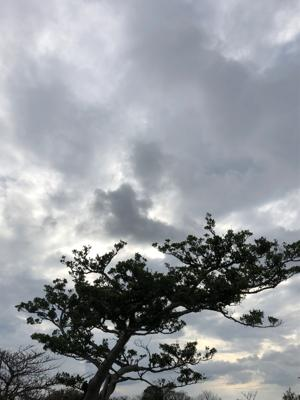
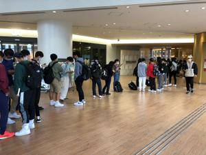
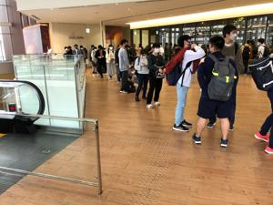
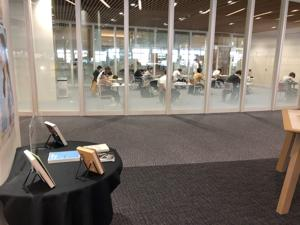
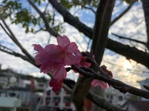

うるがいの話 ある日
最新: 期末試験【うるがいの話 ある日】とは 一日だけのプログです
『うるがいの話』の最新一日だけのプログで、通信料が少なく経済的だ。カニの画像をクリックすると全ての日付が載る『うるがいの話』サイトを表示します
|
|
【うるがいの話】 うるがい(ｳﾙｶﾞｲ urugai)とは、『もずくがに』の名前でとても大きくなります。 |
|---|---|
|
|
【カミマヤーの話】 猫のことを方言でマヤーといいます。カミマヤー（kamimayaa）とは、神の猫のことです。 |
|
【たながぁの音楽】 たながぁ（ﾀﾅｶﾞｰtanagaa）とは手長えびのことで、何種類かあり大きいのは車 エビぐらいになります。 |

|
【ぶながぁの話】 ぶながー(bunagaa)とは、赤い髪の毛、赤い身体、そして身長は１ｍ２０ｃｍ ぐらい、川の蟹を食べているの目撃された。場所は沖縄県国頭郡大宜味村のと ある村僕の隣近所に住んでいる爺さんから、聞いた話です。 |
|
|
【ギーマの話】 ギーマ(giima)とは、山原の里山に咲くスズランに似た、 花を付けます。実は食べられます、 気が付くと口の周りが紫になっています。 |
2022年02月13日 (日）期末試験
16:48
   
９時前に県立図書館の入り口に行くと、お！、学生の列が出来ている。百名以
上いそうだ。列には並ばず、離れたところで見学していた。図書館の係の人が
１０名づつ、区切って入室させていた。延々と待つこと５分、列が無くなった
ところで入室する。係の人に何かあるのですかと尋ねると、期末試験ですよと
答えた。ほー、懐かしい。彼らは高校生のようだ、私の高校生３年の時、バス
ケットの部活で忙しく余り勉強しなかった友達が、私の家にきて私の部屋で徹
夜で勉強した。やがて夜も開け私の母親が作ってくれた朝ごはんを食べて、辺
士名高校へ歩いていった。友達は無事、赤点（３５点）をとらず済んだと喜ん
でいた。遠い昔の話である。

１６時４５分 ビットコインの総資産 ￥１４、１７９↑